Veta Studio

Introducción
Identidad visual y social media para Veta Studio, agencia de marketing. El logotipo combina una tipografía caligráfica para "veta", que aporta cercanía y un carácter humano, con una sans serif para "STUDIO", que representa estrategia, claridad y profesionalismo. Una paleta de blanco crema, marrón beige, celeste agua, verde lima y chocolate construye un sistema visual flexible que equilibra lo humano con lo profesional.
Mi participación
- Logotipo principal, secundario y reducciones
- Paleta de colores y tipografías
- Aplicaciones de marca
- Look & feel y piezas para Instagram
Identidad visual
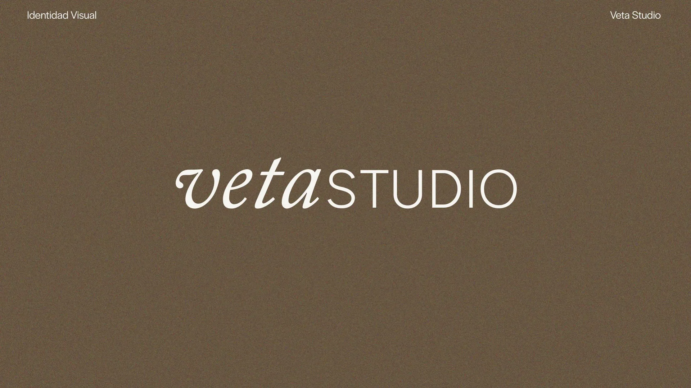
Sistema visual
03 piezas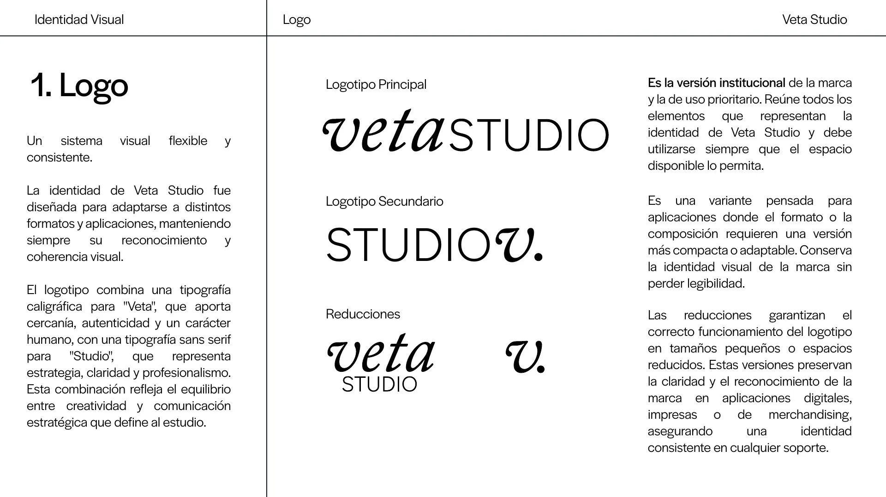
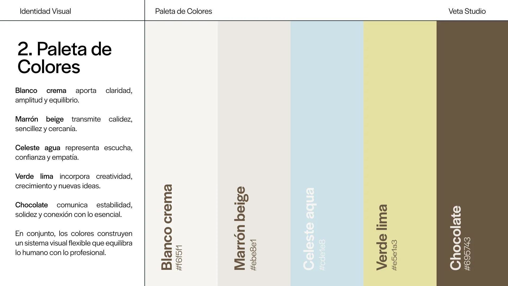
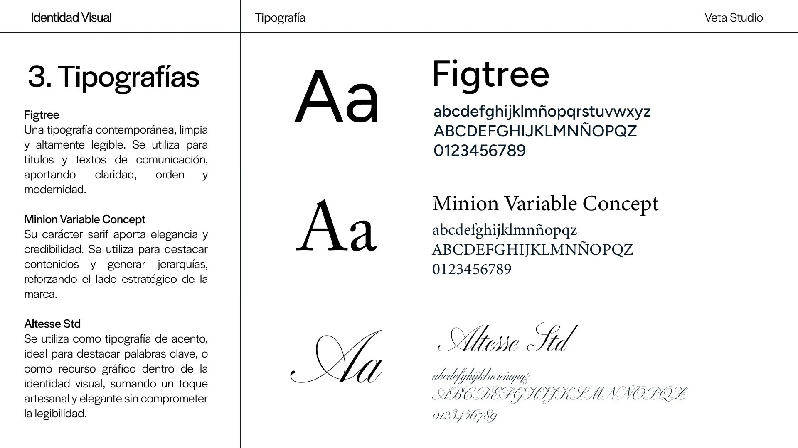
Aplicaciones de marca
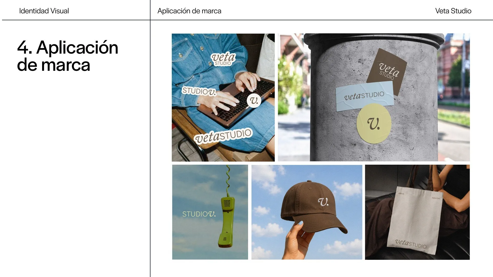
Look & feel en Instagram
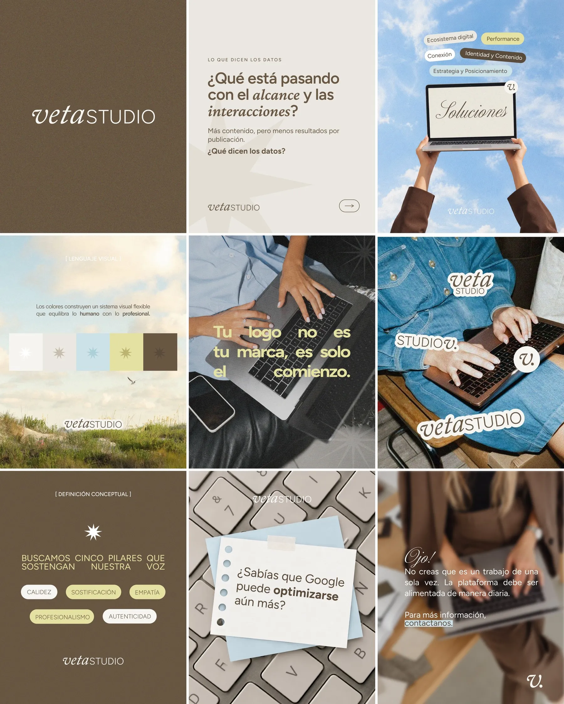
Piezas para redes
01 / 07
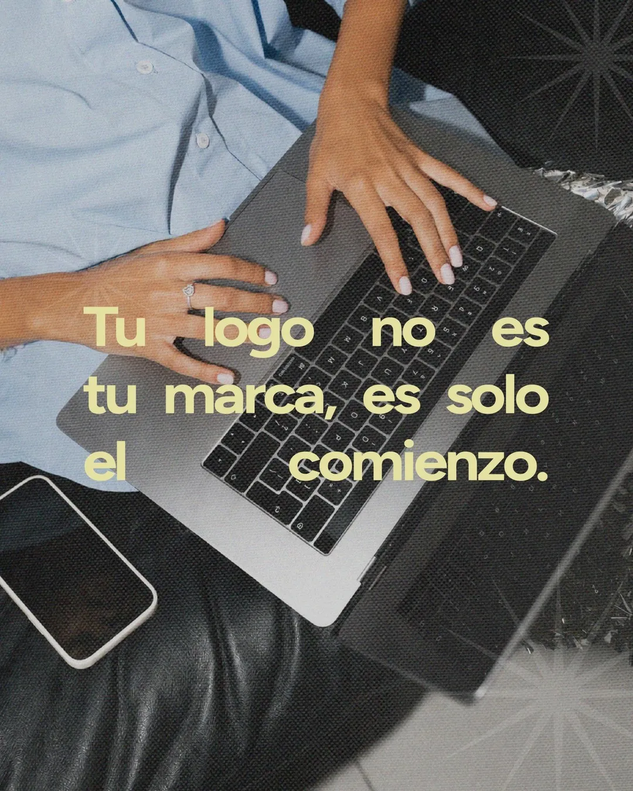
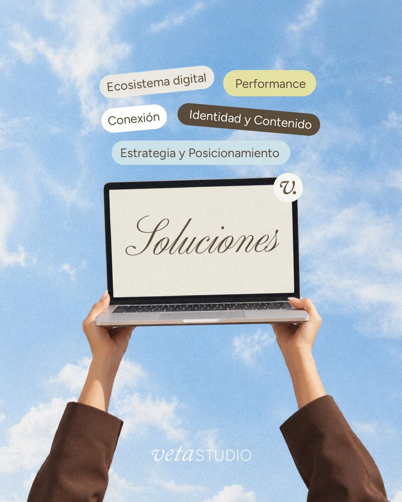
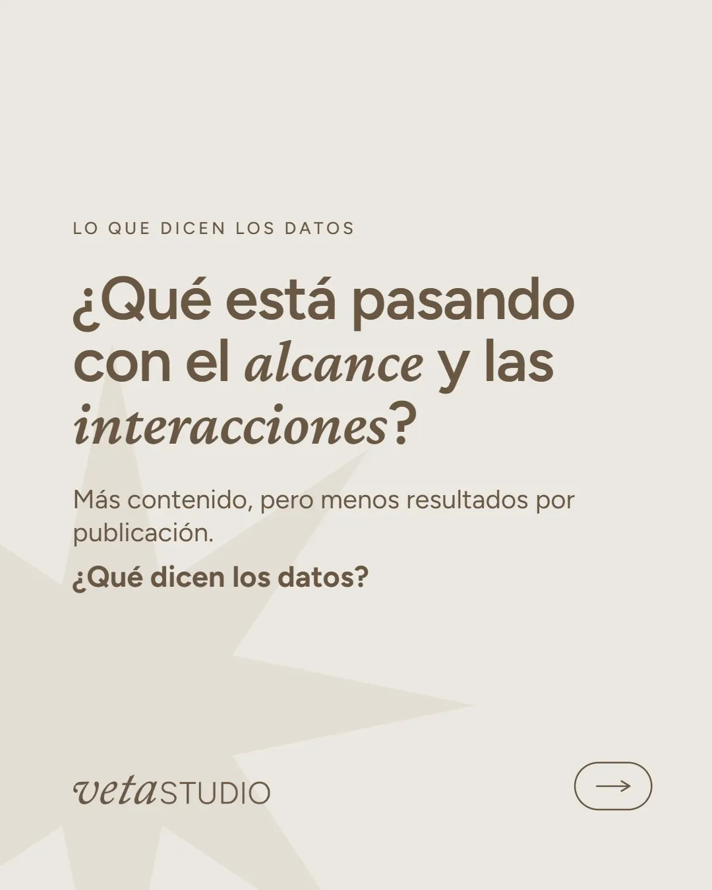
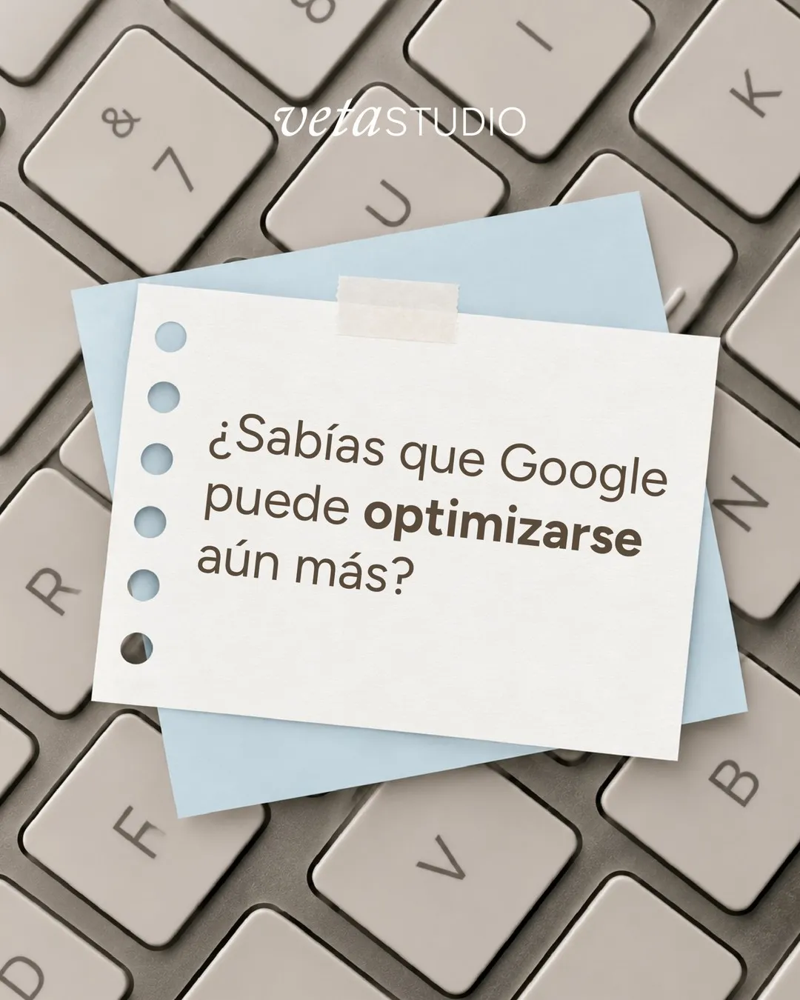
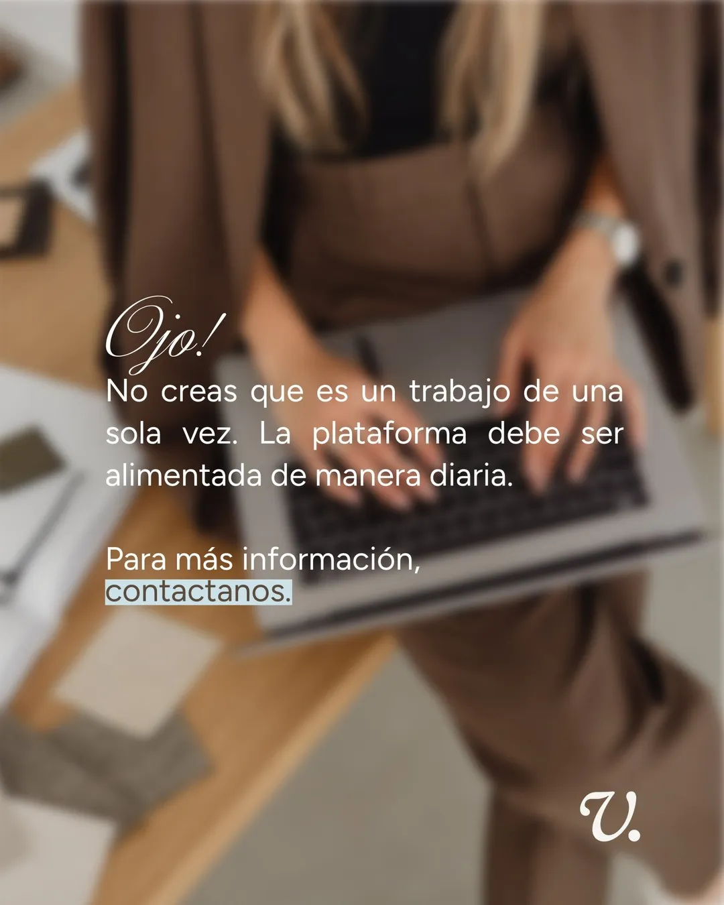
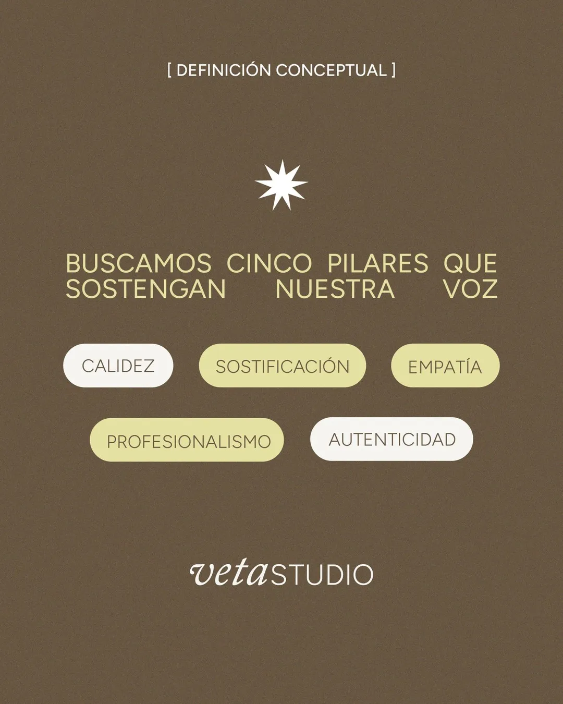
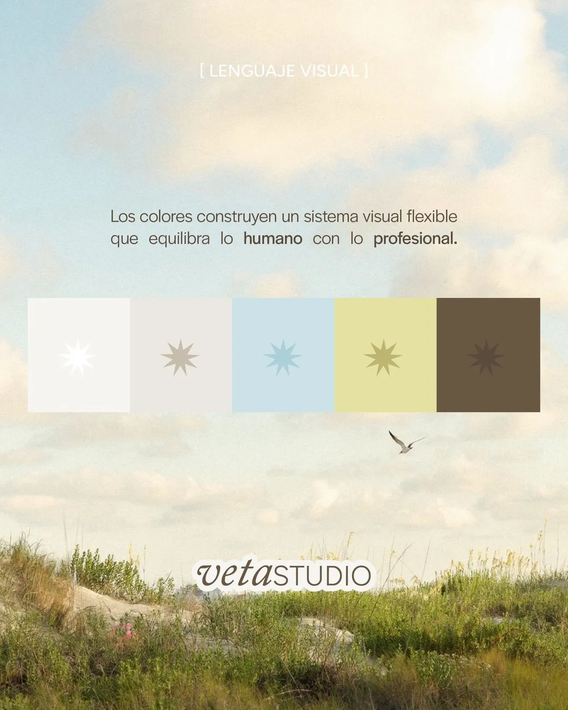